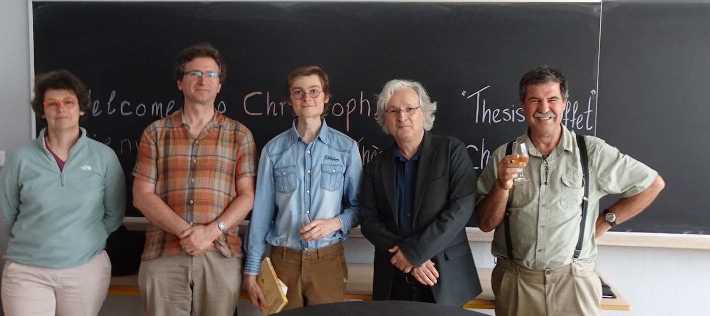

Christopher-Lloyd SIMON
I am a mathematician.
- Professional Email (untill 2025): cks6029 [at] psu (dot) edu
- Personnal Email (untill full): christopher (dot) lloyd (dot) 31 [at] gmail (dot) com
Structure of this website.
From the menu you can access the following items.
- Presentation : Academic CV, online identities, research interests and projects, organised conference.
- Works: (pre)publications, talk slides, algorithmic experimentations, expository notes, outreach articles.
- Students: about my past or current students, documents for (prospective) students, teaching activities.
- Unclassified: (meta)mathematical thoughts, pictures, quotes, interesting or useful links, etc.

Pot de thèse avec des membres du jury